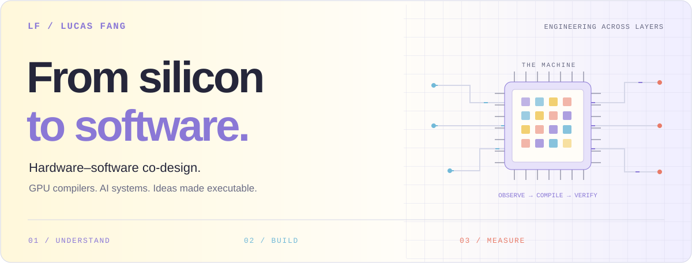

Qingyang (Lucas) Fang
Hardware–software co-design engineer · GPU compilers · AI systems
Selected builds / More work / Background / Activity / Connect
I build across the stack: from GPU instruction encoding and compiler backends to AI workflows people can actually use. My work connects hardware behavior, mathematical reasoning, and software systems through measurement and working implementations.
My current focus is OpenAssembler v0.2.0: extending an SM80 compiler and emulator into native FP16/BF16 tensor GEMM and a configured PyTorch integration path.
| Close to the hardware | Across the system | Built for people |
|---|---|---|
| PTX / SASS · NVIDIA Ampere | Python · CUDA C/C++ frontends | AI workflow orchestration · PyTorch integration |
| Instruction encoding · Scheduling | Emulation · Numerical verification | MCP tooling · HTML / React demos |
| Register allocation · GPU kernels | Distributed learning · MLOps | Reviewable artifacts · Developer tools |
Selected builds
01 / OpenAssembler
Understanding the machine. Building the compiler.
OpenAssembler combines a PTX-to-SASS compiler backend, instruction encoder/decoder, and GPU emulator for NVIDIA Ampere (sm_80). Version 0.2.0 adds a native FP16/BF16 tensor-core GEMM path for full tiles, using a specialized schedule that integrates with the project's SASS tooling.
A configured PyTorch workflow demonstrates the extension on a selected transformer with CUDA graph capture. The project's reviewed report says the tuned GEMM is 16–27% faster than its previous direct schedule on tested shapes and reaches 80–99% of matched cuBLAS throughput. These are GEMM-level, project-reported comparisons, not end-to-end training speedups or broad model benchmarks. The integration is explicitly configured; it does not automatically replace every model GEMM.
Explore the repository ↗ · Tensor GEMM details · Integration review · Reproduction guide
Open the engineering deep dive — architecture, evidence, and scope
Compiler core and tensor-GEMM extension
- A custom compiler backend: instruction selection, dead-code elimination, coalescing, linear-scan register allocation, basic-block scheduling, and optional 4× loop unrolling.
- An Ampere SASS encoder/decoder: instruction encodings, operands, control fields, and scheduling metadata.
- A SASS emulator: including tensor-core numerical behavior checked against recorded A100 results.
- Constant division and remainder lowering: multiply-high sequences with Z3-backed equivalence checks.
- A fast matrix-multiplication path: Strassen / AlphaTensor factorizations verified exactly over the rationals and compiled through the backend.
- Multiple entry points: a small Python kernel subset, PTX, and CUDA C/C++ through
nvcc’s PTX frontend, plus an interactive CLI. - Version 0.2.0 tensor GEMM: a native SM80 tensor-core path for FP16/BF16 matrix multiplication, specialized for supported full-tile inputs.
- PyTorch integration: a configured application workflow routes supported GEMM calls through the extension and uses CUDA graph capture for replay; it is a separate integration layer, not automatic compiler-wide substitution.
The integration review reports 16–27% lower GEMM time than the previous direct schedule on tested shapes and 80–99% of matched cuBLAS throughput. The selected-transformer path is an integration check, not a reported end-to-end training speedup.
Earlier compiler benchmark snapshot
The following A100 measurements describe the compiler/probe snapshot documented on 2 November 2026. They are separate from the v0.2.0 tensor-GEMM comparisons above and do not measure end-to-end PyTorch training.
| Measurement | Result | Context |
|---|---|---|
| Division-by-7 loop | 1.36× speedup | 0.629 → 0.464 ms vs. ptxas, A100 |
| Remainder-by-1000 loop | 1.19× speedup | 0.373 → 0.312 ms vs. ptxas, A100 |
| Compiled probe correctness | 110 / 110 bit-exact | Hardware-tested compiler subset, A100 |
| Instruction count | 5.2% fewer | 2,132 vs. 2,249 across 203 supported probes |
| Matrix-multiply factorizations | 97 / 97 verified | Exact verification over the rationals |
These are project-reported results for specific workloads, documented in the repository's benchmark notes. The 203-probe compilation coverage is larger than the 110-probe hardware-validated subset. Tight dependent chains remain slower than ptxas; the earlier fast-matmul results do not beat cuBLAS. They are retained as a dated baseline, not presented as measurements of v0.2.0's specialized tensor-GEMM path.
Current scope: the SASS encoder and latency model target sm_80. The general backend remains a partial PTX compiler with documented frontend and instruction limits; its compatible ELF packaging still uses a ptxas-generated container. The tensor-GEMM path has narrower shape and tile requirements and should not be read as support for arbitrary PyTorch models or GPUs.
See the actual CLI

02 / Grand Tool
From a product idea to a reviewable design and a working demo.
An MCP-first local AI design workflow that connects prompts and context files to a structured blueprint, Pencil design automation, artifact review, and explicit HTML/React demo generation.
The system makes each stage inspectable: tasks keep their own state, design exports, screenshots, review notes, and generated code. A human review checkpoint sits between design review and code generation.
Explore the repository ↗ · User guide · Architecture
Open the product deep dive — orchestration, artifacts, and outputs
The workflow
| Stage | Responsibility | Inspectable output |
|---|---|---|
| 01 · Blueprint | Turn a prompt and context into a structured UI plan | Enhanced prompt + blueprint.md |
| 02 · Design | Use a tool-calling agent and Pencil MCP to construct the design | Variables, layout, design export, screenshots |
| 03 · Review | Review artifacts, then wait for a person to approve or request changes | Review reports + human checkpoint |
| 04 · Demo | Generate an implementation from the design export | HTML demo or Vite / React / TypeScript / Tailwind app |
Engineering choices
- Explicit orchestration: a phase-based state machine tracks each task from intake through code generation.
- Native design-tool integration: Pencil MCP exposes editor state, design operations, screenshots, and exports to the agent.
- Artifact continuity: the design export connects generation, review, and implementation.
- Task isolation: each run has its own context, state, screenshots, reviews, and code directory.
- A deterministic fallback: if Pencil MCP is unavailable, blueprint-derived design artifacts keep the demo path usable.
- A local product interface: a Python server provides task APIs and a browser UI for running and reviewing the workflow.
Stack: Python · DeepSeek · Pencil MCP · optional OpenRouter visual review · HTML/CSS/JS · React · TypeScript · Vite · Tailwind.
Current scope: HTML and React are the documented MVP outputs. Native apps, WeChat mini programs, and full production applications are future extension targets. Fallback design artifacts come from the blueprint; generated React code may still require verification.
More work
Different domains, the same interest in how systems learn, reason, and execute.
| Project | What you’ll find |
|---|---|
| Decentralized Learning Tutorial ↗ | Notes on federated learning, gossip learning, peer-to-peer networks, and decentralized clustering. |
| Mathematical Proof Reasoning Agent ↗ | An exploratory knowledge-graph approach to finding logical chains for mathematical proofs. |
| AlphaForge-HFT ↗ | A trading-system demo with data ingestion, rolling strategy optimization, an execution layer, and a Plotly Dash dashboard. |
| Simple Trading Strategies ↗ | Python notebooks exploring moving averages, mean reversion, MFI, RSI, and historical backtesting. |
Background
Machine Learning Intern · University of California, Santa Cruz · Summer 2026
Worked on peer-to-peer decentralized learning, convergence analysis, and network simulations for gossip-learning systems.
My foundation is in computational and applied mathematics, with interests spanning compiler engineering, distributed ML, and mathematical reasoning. I work in English and Chinese.
Research interests & mathematics highlights
Research interests
- Knowledge distillation and convergence in asynchronous peer-to-peer gossip networks.
- Internal model signals and selective intervention paths.
- The relationship between mathematical structure, numerical behavior, and efficient implementation.
Find my papers and writing on Google Scholar ↗
Mathematics highlights
- Berkeley Math Tournament — national individual first place.
- Stanford Math Tournament — global third place.
- International Mathematical Modeling Challenge — finalist.
Activity, in public

Refreshes every six hours with GitHub Actions (scheduled runs can be delayed). Each successful refresh updates the statistics, UTC timestamp, and image cache key. Repository and star totals exclude forks; language shares reflect repository bytes, not proficiency. Contributions follow GitHub’s public visibility settings.
Let’s build across layers.
Interested in GPU compilers, hardware–software co-design, AI infrastructure, or developer tools? I’d love to compare notes.